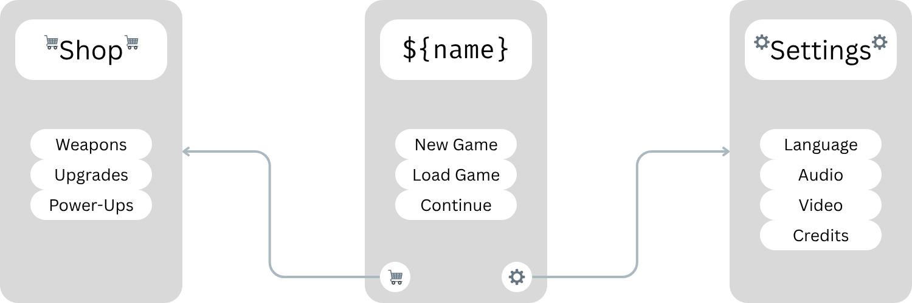

Team
Devin Basaraba
DISCLAIMER
This is a template, and it is in no way a restrictive document. Feel free to change it and make it your own. We know all ideas are different and some elements might not apply to yours, while others are missing. Keep it brief. It should be easy to read and follow for you and other team members. Write it as a group. Unless you are working alone, involve the whole team. Change it as you wish. Do not limit yourself, let the design document change as your game design progresses. Make it your document. Add images, videos, gifs, jokes. Anything goes!Overview
Tagline
Describe your game concept and story
Genre and Theme
Elaborate on the game's genre, the story and gameplay themes
Competitive Landscape Research
List similar games. Add visuals and describe how they are different
Target Audience and Platform
Define the target audience. List other media or games the target audience enjoys
Define the platform the game is for. What is the input modality?
Gameplay
Include visual references to other games, films, and art. Sometimes images and gifs communicate more than words
Narrative
Describe the core story of the game
Describe the player's struggle and conflict
List who the player encounters during the game? Describe key allies NPCs
Are there any key story turning points? Twists and turns?
Mechanics
Describe the core elements of gameplay. Describe the core loop of the game
Explain what the player/character does according to the situation
Describe the obstacle the player/character needs to overcome and define their goal
Describe how the game prevents the player from achieving the goal
List the key resources available to the player and describe how they will be spent and replenished
Describe whether resources have risk and reward scenarios
Interface
Illustrate what the player will see with the camera
Explain who and what the player controls
Describe the player's visceral feeling
List the vital information the player needs to be aware of moment-to-moment
Audio
Describe the sound, music, and sound effects the player hear
Explain how the sound creates an atmosphere in the game
Production
Explain the vital art assets to the in-game experience
List the key visual aesthetics
Describe the type of light the game will have
Explain the role of light and shadows in the game and how it creates an atmosphere
Define if light needs to be dynamic
Explain the key reliability factors
Describe the color palette that will be used and what it will communicate
Project Scope
The project will be done in time commitment, and we will use necessary resources: budget, assets, time, technical, etc.. Within these constraints, we will deliver briefly describe what you want to target in this game jam: a prototype, a level, a minimum viable product, etc.